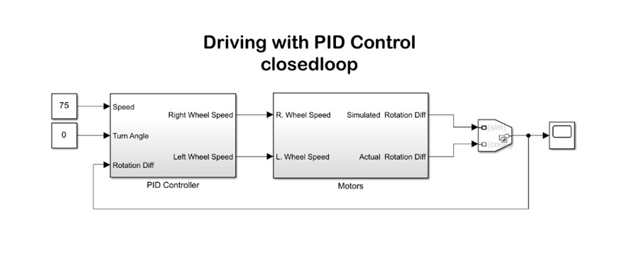
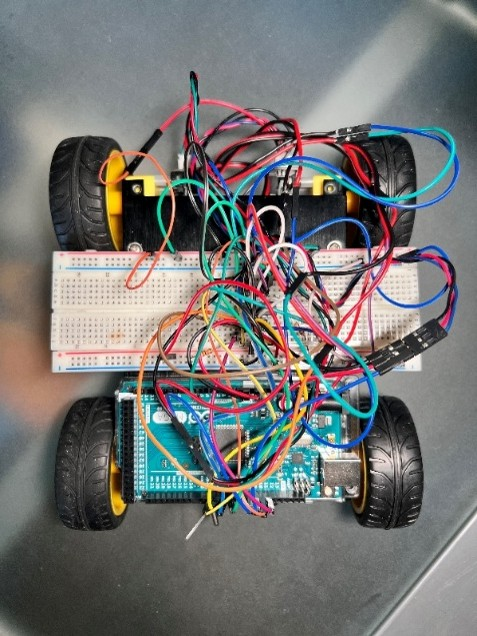
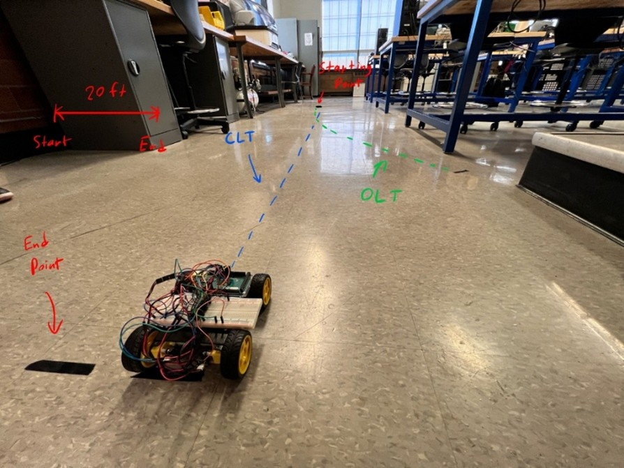

Academic mobile robotics project focused on using discrete PID control to reduce heading deviation using independent motor control.
I assembled a 4-wheeled mobile robot and simulated a discrete PID controller in Simulink to reduce heading deviation in the robot using independent motor control.
The objective was to compare open-loop and closed-loop driving behavior and show how feedback control could improve the robot's ability to travel in a straighter path.
I designed a closed-loop PID control structure in Simulink. The controller used the robot's desired speed, turn angle, and rotation difference to dynamically adjust the left and right wheel speeds.
I then implemented the discrete PID velocity controller on an Arduino Mega 2560. The controller adjusted motor power based on wheel rotation feedback, allowing the robot to correct heading error during motion.

Simulink Model: Closed-loop PID control architecture for independent wheel-speed control.

Robot Hardware: Four-wheeled mobile robot assembled with an Arduino Mega 2560, motor driver hardware, and wheel feedback wiring.
The vehicle traveled approximately 20 feet from start to end. The open-loop trajectory showed a curved path, indicating heading deviation, while the closed-loop trajectory remained nearly straight.
This demonstrated that the PID controller improved the robot's ability to maintain a straighter path by correcting heading error through feedback.

Experimental Result: The green dashed path shows the open-loop trajectory, while the blue dashed path shows the improved closed-loop trajectory.
This project helped me connect simulation-based controller design with physical embedded implementation. It reinforced the importance of feedback, sensor measurements, tuning, and experimental validation when applying PID control to mobile robotic systems.